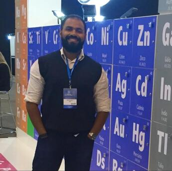

Professor Pleno · UEFS
Prof. Dr. Clayton Queiroz Alves
Graduado em Química pela Universidade Estadual do Sudoeste da Bahia (2004), Mestre (2007) e Doutor (2012) em Química pela Universidade Federal da Bahia, com Pós-Doutorado no Instituto de Ciências Biomédicas Abel Salazar — Universidade do Porto, Portugal (2017–2018). Professor Pleno da UEFS desde 2012. Tem experiência em Química Orgânica, com ênfase em Produtos Naturais, Fitoquímica e Atividade Biológica in vitro. Orienta nos Programas de Pós-Graduação em Ciências Farmacêuticas (UEFS) e em Recursos Genéticos Vegetais (PPGRGV/UEFS). Coordenador do LabQuim (desde 2020), Vice-coordenador da Central Analítica da UEFS (desde 2024) e Coordenador do LABEM — Laboratório de Espectrometria de Massas (desde 2024).
- Química dos Compostos Orgânicos II (EXA 291)
- Química Orgânica Experimental II
- Métodos Físicos de Análise Orgânica
- Química Geral e Inorgânica (Engenharia de Alimentos)
- Química Orgânica Experimental I
- Química Analítica (Ciências Farmacêuticas)
- Coordenador do LABEM — Laboratório de Espectrometria de Massas (set/2024–atual)
- Vice-coordenador da Central Analítica da UEFS (ago/2024–atual)
- Coordenador do LabQuim — Laboratório de Pesquisa em Química (mar/2020–atual)
- Coordenador do Horto Florestal da UEFS (set/2020–set/2021)
- Coordenador Pedagógico do Projeto UPT — Universidade para Todos (mar/2018–out/2019)
- Coordenador Geral e Pedagógico do Projeto UPT (abr/2014–fev/2017)
- Revisor de periódicos: RSC Medicinal Chemistry; J. Biomolecular Structure & Dynamics; Revista Virtual de Química; Química Nova; Pharmaceutical Biology
- Patente INPI (BR10202001359): Uso de Bergenina como composição antimicrobiana para prevenção de crescimento fúngico em plantas (2020)
- Prêmio Miguel Fascio de Melhor Pôster — X EQBA (2025)
- Prêmio Inventor 2012 — Universidade Federal da Bahia
- Orientador de trabalho premiado em 1º lugar (modalidade oral, Ciências Exatas) — XVIII Seminário de IC da UEFS (2014)
Professora Assistente B · UEFS
Profa. Dra. Humbervânia Reis Gonçalves da Silva
Graduada em Química pela UFBA (2009), Mestre em Química pela UFBA (2012) e Doutora em Química pela UFBA (2017), com dois Pós-Doutorados na UFBA (2020 e 2021–2022, com bolsa PETROGAL BRASIL S/A). Professora efetiva da UEFS desde setembro de 2022. Tem experiência em espectrofluorimetria, quimiometria, propriedade intelectual e biocombustíveis. Vice-coordenadora do Colegiado do Curso de Licenciatura em Química (desde dez/2023) e Vice-coordenadora de Estágio (desde jan/2025). Membro do Conselho Gestor da Agência de Inovação da UEFS — INOVAUEFS (desde abr/2025). Possui 10 patentes registradas no INPI e recebeu o Prêmio Inventor pela UFBA em 2011 e 2012.
- Físico-Química I (Licenciatura em Química)
- Química Aplicada à Biologia (Agronomia)
- Química Aplicada (Engenharia Civil)
- Conceitos e Aplicações de Propriedade Intelectual — Pós-Graduação PROFNIT (UFBA)
- Bioquímica (IFBA — Biologia/Zootecnia, 2017–2019)
- Físico-Química; Química Geral I e II (UNIVASF, 2012–2013)
- Vice-coordenadora do Colegiado do Curso de Licenciatura em Química (desde dez/2023)
- Vice-coordenadora de Estágio (desde jan/2025)
- Membro do Conselho Gestor da Agência de Inovação da UEFS — INOVAUEFS (desde abr/2025)
- Prêmio Inventor — UFBA (2011)
- Prêmio Inventor — UFBA (2012)
- 10 Patentes registradas no INPI (2010–2023)
- Pós-Doutorado com bolsa da empresa PETROGAL BRASIL S/A (2021–2022)
Professora Titular · UEFS
Profa. Dra. Ivanice Ferreira dos Santos
Doutora em Química pela UFBA, com período de doutorado sanduíche no Consejo Superior de Investigaciones Científicas — CSIC/IDAEA (Espanha). Mestre e Bacharel/Licenciada em Química pela UFBA. Possui experiência em Ciências Ambientais, Química Analítica e Química Ambiental, com ênfase em: desenvolvimento de métodos analíticos para análise de poluentes, quimiometria, espectrometria de emissão e absorção atômica, atuando nos temas: planejamento e otimização de experimentos, análise exploratória (PCA/HCA/PLS), biodisponibilidade de metais em sedimentos (SVA-MES), composição mineral de alimentos, ICP OES, ICP-MS, HPLC e GC-MS. Também desenvolveu trabalhos em Biotecnologia e Microbiologia com ênfase em microbiota da Indústria do Petróleo (BRS e BRN; Tecnologia de Exclusão Biocompetitiva).
- Bolsista de Pós-Doutorado no Exterior (CNPq)
- Professora Permanente do PPGM/UEFS
- Professora Colaboradora do PGENAM/UFBA e do PGQUI/UESB

Professor Adjunto · UEFS
Prof. Dr. Marcos de Oliveira Melo
Graduado em Licenciatura em Química pela Universidade do Estado da Bahia (2005), Mestre em Química Inorgânica pela UFBA (2011) e Doutor em Química Analítica pela UFBA (2017). Professor efetivo da UEFS desde outubro de 2013, com dedicação exclusiva de 40h. Atualmente ministra as disciplinas Transformações Químicas, Química dos Elementos e Química de Coordenação e Materiais. Exerce atividades no Núcleo de Estudos Ambientais do Departamento de Geoquímica da UFBA (Instituto de Geociências). Recebeu o título de Patrono das turmas 2018.1, 2018.2 e 2019.1 da UEFS.
- Transformações Químicas
- Química dos Elementos
- Química de Coordenação e de Materiais
- Materiais
- Atividades no Núcleo de Estudos Ambientais do Departamento de Geoquímica da UFBA (Instituto de Geociências)
- Patrono das turmas 2018.1, 2018.2 e 2019.1 da UEFS
Professora Titular · UEFS
Profa. Dra. Vânia Rastelly de Sousa
Graduada em Química Industrial pela UFBA (1997), Mestre em Química pela UFBA (1999) e Doutora em Química pela UFBA (2005). Professora da UEFS desde novembro de 2001 (Adjunta até 2015, Titular desde 2015), com dedicação exclusiva de 40h. Tem experiência em Química de Produtos Naturais e Resíduos Químicos, atuando em: Meio Ambiente, Gestão de Resíduos Químicos, Educação Ambiental e Fitoquímica. Coordenadora de Extensão do Departamento de Ciências Exatas (2018–2024) e Membro da Comissão de Curricularização da Extensão na UEFS (desde 2021). Aprovada em concurso público para Químico de Petróleo Júnior da PETROBRAS (2001) e para a carreira do magistério público (2000). Recebeu o título de Professora Homenageada do Curso de Licenciatura em Química (2018).
- EXA 489 — Gerenciamento de Resíduos Químicos (Licenciatura em Química e Agronomia)
- EXA 409 — Química Geral e Inorgânica (Engenharia de Alimentos)
- EXA 413 — Físico-Química (Farmácia)
- EXA 414 — Físico-Química I (Engenharia de Alimentos)
- EXA 418 — Química Aplicada à Biologia (Ciências Biológicas)
- Presidente da Comissão Técnica de Gerenciamento de Resíduos Químicos (membro desde nov/2012)
- Coordenadora de Extensão do Departamento de Ciências Exatas (jan/2018–ago/2024)
- Membro da Comissão de Curricularização da Extensão na UEFS (desde ago/2021)
- Membro do Comitê Interno de Bolsas de Extensão (2017–2021)
- Membro do Colegiado de Engenharia de Alimentos (2008–2018)
- Professora Homenageada do Curso de Licenciatura em Química — UEFS/Turma de Química (2018)
- Aprovada em concurso público para Químico de Petróleo Júnior — PETROBRAS (2001)
- Aprovada em concurso público para a carreira do magistério público (2000)